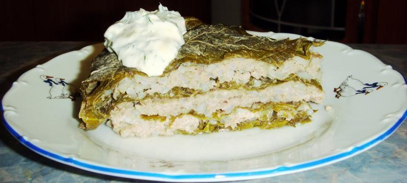

"Долма ленивая"
Домашняя страница

Ленивая долма в духовке
Ленивая долма - элитное блюдо без лишних хлопот !
Ингридиенты :
- Фарш мясной 500 гр.
- Рис 3 ст.ложки
- Лук 2 штуки
- Листья виноградные 20 гр.
- Соль - по вкусу
- Чёрный перец молотый - по вкусу
Как приготовить ленивую долму:
- Рис отварить до полуготовности, охладить.
- Лук измельчить миксером.
- В фарш добавить рис, лук, перец, соль.
- Виноградные листья залить на 5 минутут кипятком, затем быстро охладить под струей холодной воды.
- На дно формы положить слой виноградных листьев.
- Фарш намазать на листья.
- Накрыть слоем виноградных листьев.
- Таким же образом сделать еще один слой.
- Залить долму подсоленой водой и поставить в разогретую до 180 градусов духовку на 45-50 минут.
- Ленивую долму переложить на блюдо.
- Подавать с одним из соусов: кефир с чесноком, сметана с чесноком, майонез с чесноком.